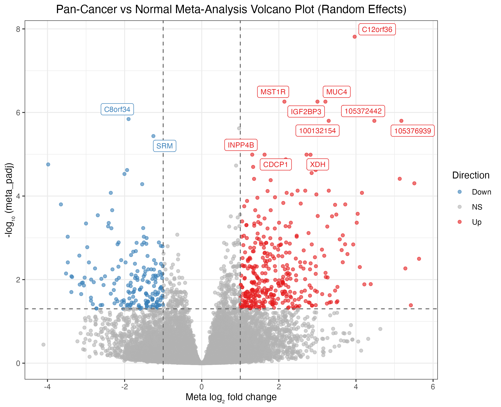

🌐 Online Resources & Live Demos
Overview
Most transcriptomic meta-analysis tools address only one part of the workflow — existing packages handle data harmonization or DE analysis or meta-statistics, but not the full pipeline. metaXpress closes this gap.
It provides a single, opinionated, end-to-end pipeline:
GEO / SRA / Local files
│
▼
┌───────────────────┐
│ Module 1: Ingest │ mx_fetch_geo · mx_load_local · mx_qc_study
└────────┬──────────┘
│
▼
┌──────────────────────┐
│ Module 2: Harmonize │ mx_reannotate · mx_normalize · mx_remove_batch
└────────┬─────────────┘
│
▼
┌─────────────────────┐
│ Module 3: Per-Study │ mx_de · mx_de_all (DESeq2 / edgeR / limma-voom)
│ Differential Expr. │
└────────┬────────────┘
│
▼
┌──────────────────────┐
│ Module 5: Missing │ mx_impute · mx_filter_coverage
│ Gene Handling │
└────────┬─────────────┘
│
▼
┌──────────────────────┐
│ Module 4: Meta- │ mx_meta (6 statistical methods)
│ Analysis Statistics │
└────────┬─────────────┘
│
├─────────────────────────┐
▼ ▼
┌──────────────────┐ ┌────────────────────┐
│ Module 6: │ │ Module 7: │
│ Pathway │ │ Visualization │
│ Meta-Analysis │ │ (volcano · forest │
│ │ │ heatmap · UpSet) │
└────────┬─────────┘ └────────────────────┘
│
▼
┌──────────────────────┐
│ Module 8: Report │ mx_report (HTML / PDF) · mx_export
└──────────────────────┘
📦 Installation
Install metaXpress directly from GitHub:
# Install remotes if not already installed
if (!requireNamespace("remotes", quietly = TRUE)) {
install.packages("remotes")
}
# Install metaXpress directly from GitHub
remotes::install_github("hossainlab/metaXpress")
Alternative Installation with pak
# install.packages("pak")
pak::pkg_install("hossainlab/metaXpress")
🔬 Scientific Validation: Public GEO Pan-Cancer Case Study
metaXpress has been benchmarked and scientifically validated across three independent public NCBI GEO bulk RNA-seq cohorts totaling 52 patient samples and 39,376 aligned genes: - Colorectal Adenocarcinoma (CRC): GSE130688 (, 10/10 QC score) - Pancreatic Ductal Adenocarcinoma (PDAC): GSE136569 (, 10/10 QC score) - Clear Cell Renal Cell Carcinoma (ccRCC): GSE171485 (, 10/10 QC score)
Key Discoveries
-
558 Shared Meta-DEGs identified () with 100% directional concordance and zero between-study heterogeneity ().
-
Statistical Power Amplification: Rescued small-sample cohorts (e.g. GSE171485 with only 18 individual DEGs) into a well-powered pooled consensus.
-
Biomarker Recovery: Successfully recovered canonical oncogenes (
MST1R, MUC4, IGF2BP3, CDCP1) and conserved tumor suppressors (FAM107A).
| Study Characteristics Overview |
Pan-Cancer Meta-Volcano |
 |
 |
👉 Read the complete scientific report: case_study_results/README.md or online at https://mdjubayerhossain.com/metaXpress/articles/case_study.html.
| Feature |
metaXpress |
DExMA |
GEDI |
limma |
| GEO public data ingestion |
✅ |
❌ |
❌ |
❌ |
| 10-point study QC checklist |
✅ |
❌ |
❌ |
❌ |
| Cross-platform harmonization |
✅ |
❌ |
✅ |
❌ |
| Library-type bias correction |
✅ |
❌ |
✅ |
❌ |
| Per-study DE (3 engines) |
✅ |
❌ |
❌ |
✅ |
| 6 meta-analysis methods |
✅ |
✅ |
❌ |
❌ |
| Missing gene imputation |
✅ |
✅ |
❌ |
❌ |
| Pathway meta-analysis |
✅ |
❌ |
❌ |
❌ |
| Interactive Shiny Explorer |
✅ |
❌ |
❌ |
❌ |
| Reproducible report export |
✅ |
❌ |
❌ |
❌ |
Quick Start
library(metaXpress)
# ── 1. Fetch and QC studies from GEO ──────────────────────────────────────
# Download count matrices and curated metadata directly from NCBI GEO
studies <- mx_fetch_geo(c("GSE130688", "GSE136569", "GSE171485"))
# Filter studies passing quality control criteria (score >= 7/10)
studies <- mx_filter_studies(studies, qc_threshold = 7)
# ── 2. Harmonize ──────────────────────────────────────────────────────────
# Standardize gene identifiers to SYMBOL
studies <- mx_reannotate(studies, org = "Homo sapiens", target_id = "SYMBOL")
# Align common gene universe across cohorts
studies <- mx_align_genes(studies)
# ── 3. Per-study Differential Expression ──────────────────────────────────
# Fit negative binomial GLMs independently across cohorts
studies <- mx_de_all(studies, method = "DESeq2", formula = ~ condition)
mx_de_summary(studies)
# ── 4. Handle Missing Genes ───────────────────────────────────────────────
de_results <- lapply(studies, function(s) s@de_result)
de_results <- mx_filter_coverage(de_results, min_studies = 2)
# ── 5. Statistical Meta-Analysis ──────────────────────────────────────────
# Combine effect sizes and standard errors via DerSimonian-Laird Random Effects
meta_result <- mx_meta(de_results, method = "random_effects")
# ── 6. Pathway Meta-Analysis ──────────────────────────────────────────────
meta_result <- mx_pathway_meta(meta_result, db = "Hallmarks", method = "ORA")
# ── 7. Visualize Results ──────────────────────────────────────────────────
mx_study_overview(studies) # QC metrics and cohort depths
mx_volcano(meta_result, label_top = 15) # Publication-grade volcano plot
mx_heterogeneity_plot(meta_result) # Higgins I² distribution
# Forest plot for top-ranked candidate gene
top_gene <- meta_result@meta_table$gene_id[which.min(meta_result@meta_table$meta_padj)]
mx_forest(top_gene, de_results, meta_result)
# ── 8. Interactive Explorer & Export ──────────────────────────────────────
# Launch interactive dashboard locally
mx_run_app()
# Export results table
mx_export(meta_result, format = "csv", output_dir = "results/")
metaXpress implements six statistical methods selectable via the method argument in mx_meta():
| Method |
method = |
Effect Size |
Handles Heterogeneity |
Min Studies |
Reference |
| Fisher’s combined p-value |
"fisher" |
❌ |
❌ |
2 |
Rau et al. 2013 |
| Stouffer’s Z-score |
"stouffer" |
❌ |
❌ |
2 |
Rau et al. 2013 |
| Fused inverse-normal |
"inverse_normal" |
❌ |
Partial |
2 |
Prasad & Li 2021 |
| Fixed effects (Inverse-variance) |
"fixed_effects" |
✅ |
❌ |
2 |
Keel & Lindholm-Perry 2022 |
|
Random effects (default)
|
"random_effects" |
✅ |
✅ |
3 |
Keel & Lindholm-Perry 2022 |
| Adaptive weighting (AWmeta) |
"awmeta" |
✅ |
✅ |
3 |
Hu et al. 2025 |
Method Selection Guide: - 2 studies: use "fisher" or "stouffer" - 3+ studies, : use "fixed_effects" - 3+ studies, : use "random_effects" (default) - Mixed or unknown heterogeneity: use "awmeta"
S4 Data Structures
mx_fetch_geo() ──► metaXpressStudy ──► mx_de() ──► mx_meta() ──► metaXpressResult
├── counts ├── meta_table
├── metadata ├── method
├── accession ├── n_studies
├── organism ├── heterogeneity
├── qc_score (0–10) └── pathway_result
└── de_result
10-Point Study QC Scoring
mx_qc_study() benchmarks each study against 10 objective criteria (Heberle et al. 2025):
| # |
Criterion |
Threshold |
| 1 |
Minimum sample size |
≥ 3 replicates per group |
| 2 |
Sequencing depth |
Median ≥ 10M reads |
| 3 |
Alignment rate |
Mean ≥ 70% |
| 4 |
rRNA contamination |
< 10% |
| 5 |
Duplicate rate |
< 50% |
| 6 |
Gene detection rate |
≥ 15,000 genes in ≥ 50% of samples |
| 7 |
Metadata completeness |
condition + sample_id present |
| 8 |
Clear case/control |
Exactly 2 condition levels |
| 9 |
No batch confounding |
Batch not perfectly correlated with condition |
| 10 |
Raw counts |
Integer counts (not FPKM/TPM) |
Function Reference
Module 1 — Data Ingestion & QC
| Function |
Description |
mx_fetch_geo(accessions) |
Download count matrices + metadata from GEO |
mx_fetch_sra(srp_ids) |
Fetch from SRA via recount3
|
mx_load_local(count_paths, metadata_paths) |
Load user-supplied files |
mx_qc_study(study) |
Apply 10-point QC checklist |
mx_cluster_samples(study) |
Auto-cluster samples from metadata strings |
mx_filter_studies(studies, qc_threshold) |
Remove studies below QC threshold |
Module 2 — Normalization & Harmonization
| Function |
Description |
mx_reannotate(studies, org, target_id) |
Standardize gene ID namespace |
mx_normalize(study, method) |
TMM / VST / CPM / TPM / quantile |
mx_correct_library_type(studies) |
polyA vs rRNA-depleted correction |
mx_remove_batch(studies, method) |
ComBat-seq / ComBat / limma / harmony |
mx_align_genes(studies) |
Restrict to common gene universe |
Module 3 — Per-Study DE
| Function |
Description |
mx_de(study, method, formula) |
DESeq2 / edgeR / limma-voom on one study |
mx_de_all(studies, method, BPPARAM) |
Parallel DE across all studies |
mx_de_summary(studies) |
n DEGs per study summary table |
Module 4 — Meta-Analysis Statistics
| Function |
Description |
mx_meta(de_results, method) |
Run meta-analysis (6 methods) |
mx_heterogeneity(de_results) |
I², Q-stat, τ² per gene |
mx_sensitivity(de_results) |
Leave-one-out sensitivity analysis |
Module 5 — Missing Gene Handling
| Function |
Description |
mx_missing_summary(de_results) |
Gene × study coverage matrix |
mx_impute(de_results, method) |
exclude / mean / KNN / weighted |
mx_filter_coverage(de_results, min_studies) |
Filter by study coverage |
Module 6 — Pathway Meta-Analysis
| Function |
Description |
mx_pathway_meta(meta_result, db) |
ORA / GSEA with Hallmarks, KEGG, Reactome, GO |
mx_pathway_consensus(pathway_results) |
Pathways significant across majority of studies |
mx_pathway_dedup(pathway_results) |
Remove redundant pathways |
mx_pathway_heatmap(pathway_results) |
Cross-study pathway heatmap |
Module 7 — Visualization
| Function |
Description |
mx_volcano(meta_result) |
Meta-analysis volcano plot |
mx_forest(gene, de_results) |
Forest plot with I² for a single gene |
mx_heatmap(meta_result, studies) |
Top DEG heatmap across studies |
mx_upset(de_results) |
UpSet plot of DEG overlap |
mx_study_overview(studies) |
QC metrics summary plot |
mx_heterogeneity_plot(meta_result) |
I² distribution histogram |
Module 8 — Reporting & Export
| Function |
Description |
mx_report(meta_result, ..., format) |
Render HTML / PDF report |
mx_export(meta_result, format) |
Export CSV / Excel / RDS |
mx_session_info() |
Capture session info for reproducibility |
mx_run_app() |
Launch interactive Shiny web explorer |
Citation
If you use metaXpress in your research, academic applications, or benchmarking, please cite:
@manual{metaXpress2026,
title = {metaXpress: End-to-End Bulk RNA-seq Meta-Analysis},
author = {Hossain, Md. Jubayer},
year = {2026},
note = {R package version 0.99.0},
url = {https://mdjubayerhossain.com/metaXpress/}
}
Key References
| Method |
Reference |
| Fisher / Stouffer meta-analysis |
Rau, Marot & Jaffrézic (2013) BMC Bioinformatics
|
| Fused inverse-normal |
Prasad & Li (2021) BMC Bioinformatics
|
| Random effects (DerSimonian-Laird) |
Keel & Lindholm-Perry (2022) Front. Genetics
|
| AWmeta adaptive weighting |
Hu et al. (2025) bioRxiv
|
| Missing gene imputation |
Villatoro-García et al. (2022) Mathematics (DExMA) |
| Library-type correction |
Bush et al. (2017) BMC Bioinformatics
|
| Study QC criteria |
Heberle et al. (2025) Alzheimer’s & Dementia
|
| Sample clustering from GEO |
Coke, Niranjan & Ewing (2025) bioRxiv
|